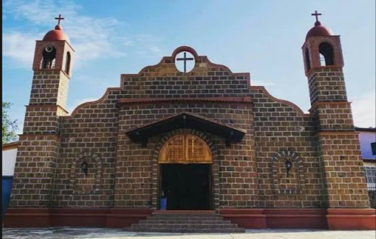

LUGAR 1
"Parroquia de San Francisco de Asís, Valle de BravoLa Parroquia de San Francisco de Asís está en el centro de Valle de Bravo, frente a la Plaza de la Independencia, y es el símbolo más importante del pueblo.
Es considerada un monumento histórico por el INAH.Su historia empieza en el siglo XVI con la llegada de los franciscanos. Desde el año 1600 ya se hacían bautismos en el lugar. En 1606 se empezó a construir la primera iglesia del pueblo, que se conocía como la Ermita. Treinta años después, en 1636, se levantó la parroquia que sustituyó a ese primer templo.

LUGAR 2
"Iglesia de Santa María Ahuacatlán, Valle de BravoLa Iglesia de Santa María Ahuacatlán, también conocida como Santuario del Señor de Santa María, está en el barrio de Santa María Ahuacatlán, a unas cuadras del centro de Valle de Bravo. Es una de las iglesias más antiguas del pueblo y es muy querida por los vallesanos." Su historia empieza en el siglo XVI. Al principio era una capilla abierta, que se llamaba "La Capilla del Calvario". Cuando aumentó la población, en el siglo XVII, se convirtió en templo. En 1864 sufrió una reconstrucción, pero nunca se concluyó del todo. En 1963 y 1972 se restauró y se reparó su fachada y su torre.

LUGAR 3
Capilla de la Virgen de Guadalupe, Valle de BravoLa Capilla de la Virgen de Guadalupe, también conocida como "La Capilla", está en el Barrio de La Capilla, justo frente a la Parroquia de San Francisco de Asís, en el centro de Valle de Bravo.Es una capilla muy antigua, pero fue remodelada a mediados del siglo XX en granito y madera. Por eso se distingue de las otras iglesias: es más sencilla, pero sobresale por sus contrafuertes de piedra y su fachada de granito.Este recinto rinde culto a la Virgen de Guadalupe los 365 días del año. Todos los días hay misas y rosarios, pero su fiesta más importante es el 12 de diciembre, día de la Virgen de Guadalupe.En la víspera, del 3 al 11 de diciembre, se hace el novenario con Rosario del Alba a las 5:00 de la mañana, misa a las 6:00 y Rosario del Ocaso a las 5:00 de la tarde. También se hace una procesión desde la Parroquia de San Francisco de Asís hasta la Capilla.

LUGAR 4
Parroquia de la Inmaculada Concepción, Cerro Colorado, Valle de BravoLa Parroquia de la Inmaculada Concepción está en el barrio de Cerro Colorado, sobre el Camino de la Compañía, en la parte alta de Valle de Bravo. Es la iglesia principal de esa comunidad.Fue erigida canónicamente como parroquia en el año 2011. Desde entonces, se ha convertido en el centro de fe y de convivencia de Cerro Colorado.Es una iglesia de dimensiones reducidas, de color blanco, con una sola nave, muy limpia y ordenada. Tiene una capilla dedicada al Sagrario, que es un espacio apartado para orar en silencio y con recogimiento. Cuenta con entrada adaptada para personas en silla de ruedas.